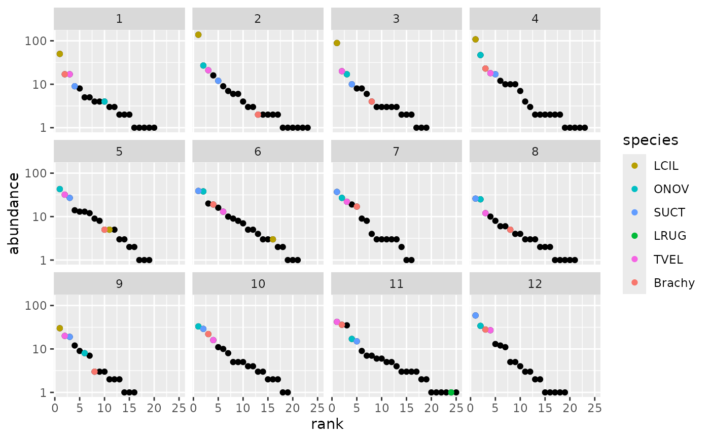

ggplot2 graphics for Rank-Abundance Distribution models
fitted with vegan functions vegan::radfit() or produced
with vegan::as.rad().
Usage
# S3 method for class 'radfit'
autoplot(
object,
facet = TRUE,
point.params = list(),
line.params = list(),
...
)
# S3 method for class 'radfit.frame'
autoplot(object, point.params = list(), line.params = list(), ...)
# S3 method for class 'radline'
autoplot(object, point.params = list(), line.params = list(), ...)
# S3 method for class 'rad'
autoplot(object, point.params = list(), line.params = list(), ...)
# S3 method for class 'rad.frame'
autoplot(object, point.params = list(), highlight = NULL, ...)Arguments
- object
Result object from
radfit.- facet
Draw each fitted model to a separate facet or (if
FALSE) all fitted lines to a single graph.- point.params, line.params
Parameters to modify points or lines (passed to
geom_pointandgeom_line).- ...
Additional arguments passed to the functions.
- highlight
Names of species that should be highlighted as coloured points.
Details
The ggplot2::autoplot() function draws graphics which are ggplot2
alternatives for lattice graphics in vegan. In
addition, there are functions for vegan::as.rad()
results which do not have dedicated graphics invegan.
Examples
library(vegan)
library(ggplot2)
data(mite)
m1 <- radfit(mite[1, ])
## With logarithmic y-axis (default) Pre-emption model is a line
autoplot(m1) +
labs(title="log-Abundance: Pre-emption model is a line")
#> Error in !point.params: invalid argument type
## With log-log scale, Zipf model is a line
autoplot(m1) +
scale_x_log10() +
labs(title="log-log Scale: Zipf model is a line")
#> Error in !point.params: invalid argument type
## Show only the best model
autoplot(m1, pick = "AIC")
#> Error in !point.params: invalid argument type
## Show selected models in one frame
autoplot(m1, pick = c("Z","M","L"), facet=FALSE)
#> Error in !point.params: invalid argument type
## plot best models for several sites
m <- radfit(mite[1:12,])
autoplot(m) +
labs(title = "Model Selection AIC (Default)")
#> Error in !point.params: invalid argument type
## use BIC and reorder sites by their diversity
autoplot(m, pick="BIC", order.by = diversity(mite[1:12,])) +
labs(title="Model Selection BIC, Ordered by Increasing Diversity")
#> Error in !point.params: invalid argument type
## Plot RAD models without fits highlighting most abundant species in the
## whole data.
m0 <- as.rad(mite[1:12,])
dominants <- names(sort(colSums(mite), decreasing = TRUE))[1:6]
autoplot(m0, highlight = dominants)
